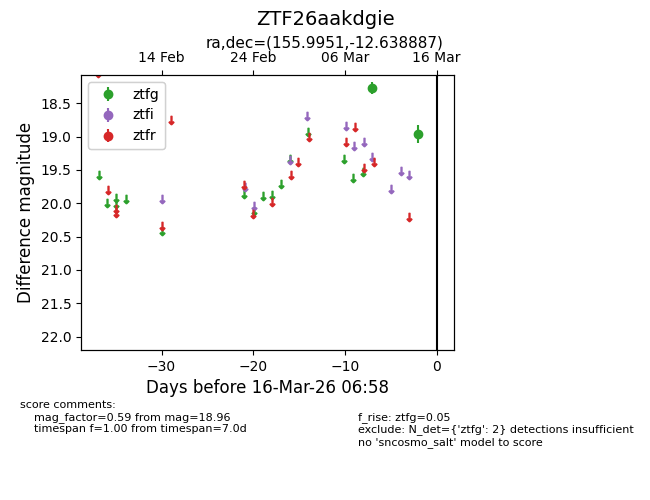
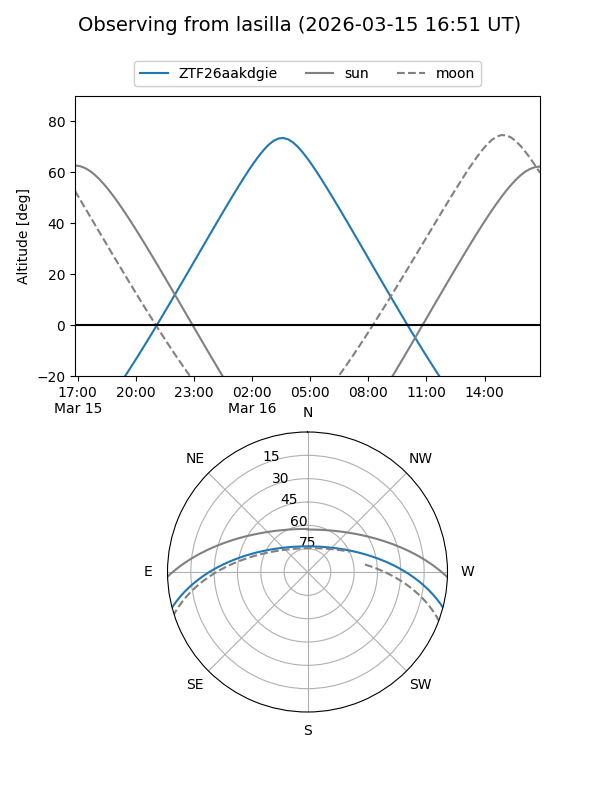
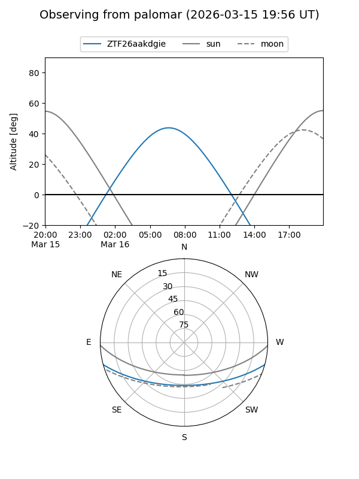

ZTF26aakdgie
Target ZTF26aakdgie at 2026-03-16 07:00
Aliases and brokers:
FINK: link
Lasair: link
ALeRCE: link
alt names
ZTF26aakdgie (ztf,fink_ztf)
Coordinates:
equatorial (ra, dec) = 155.9951,-12.63889
equatorial (HMS+DMS) = 10:23:58.83,-12:38:19.99
galactic (l, b) = (256.1836,+36.51381)
Flags:
Photometry:
last ztfg=18.96
2 ztfg detections
Lightcurve

Visibility


Additional plots